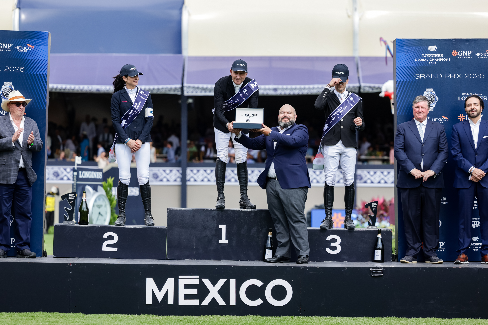

Juan Manuel Gallego firma podio en Spruce Meadows con Indiana de San Isidro
El jinete español Juan Manuel Gallego subió este jueves al podio del CSI5*/CSI2* Spruce Meadows National, en Calgary, al firmar el tercer puesto de la prueba Coril Holdings Jumper de 1,30 metros con Indiana de San Isidro. El binomio español completó el recorrido sin faltas en 74,01 segundos, a apenas medio segundo…

Cesión editorial autorizada (LGCT)
El jinete español Juan Manuel Gallego subió este jueves al podio del CSI5/CSI2 Spruce Meadows National, en Calgary, al firmar el tercer puesto de la prueba Coril Holdings Jumper de 1,30 metros con Indiana de San Isidro. El binomio español completó el recorrido sin faltas en 74,01 segundos, a apenas medio segundo de la ganadora.
La victoria fue para la amazona estadounidense Sloan Elmassian, que detuvo el crono en 73,50 segundos con Cool Hand Luka, mientras que la canadiense Sabrina von Buttlar firmó la segunda posición con Del Amie en 73,56. Los tres primeros clasificados resolvieron el trazado por debajo de los 75 segundos y con cero penalizaciones, en una prueba muy apretada del programa de menor altura del concurso.
Gallego completó así una jornada productiva en Spruce Meadows, donde también firmó el cuarto puesto con Primavera van de Kaerde, cronometrando 77,48 segundos también sin faltas. La presencia simultánea del jinete con dos caballos en el top 5 confirma el buen rodaje del equipo español en el bloque norteamericano de la temporada.
El Spruce Meadows National, una de las cuatro citas del Tour Master del recinto canadiense, mantendrá este fin de semana las pruebas grandes del CSI5*, con los grandes premios programados para sábado y domingo.
— Redacción de Hípica al Día